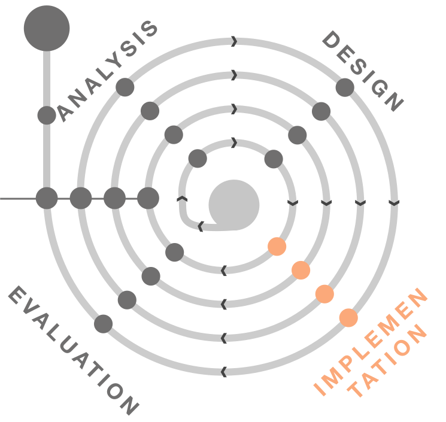

Implementation
Bring your idea to life!
Implementation Basics and Process Script-
Hi, it's Simon and welcome to Implementation Theory.
Let’s get to the theory part of the practice section: the theory of implementation.
And yes, there is actually some theory involved in this one.
When do we start implementing you might ask.
Well, we can only implement something if we already have thought about what to implement and therefore we can start with it only after actually designing our app.
Best would be, if we also would have evaluated the first draft of our design before implementing it, since this way we can avoid major errors.
Now you might rightfully ask, but how can we evaluate something that is not implemented?
Well, first off there are some methods of evaluation that do not actually need an implemented prototype (see chapter evaluation), but secondly - and this one is important to remember - if we speak of implementation, we do not necessarily mean actual coding.
What is the reason for implementation in the prototyping process?
When we have our idea and the design, we should try to experience in some way what we thought of as a prototype.
Thus, it gets easier to come up with what is good and what is bad about the design.
It helps improve our idea, the design and the prototype itself, as we can generate new ideas, which would then lead to iteration on the idea or the design and finally the prototype.
Only If one can truly experience something - and this is mostly possible with implemented solutions - you can truly learn how your users will interact with the product.
Well, on the last slide we more or less covered the positive aspects of prototyping.
But do also negative aspects come along with this step in our process?
No, not really, we should be careful though, since there are a few traps we could fall in.
We should be careful, that the implementation of our prototype does not take too long, as this could be very cost-intensive and time-consuming.
This could also lead to a too strong attachment to the prototype, which could then result in blind spots regarding the evaluation.
Another aspect, which should never be neglected, when showing potential users our first prototype is, that they might confuse this work in progress product with the end product and consequently evaluate aspects which are associated with the state of progress status and therefore are not relevant for us.
As you might have imagined, there are different possibilities and ways of prototyping.
Let’s now get to physical prototyping.
As we can see here in this image, there are different ways of prototyping.
Horizontal prototyping aims at displaying various features of the prototype without implementing all the functionalities of the different features.
On the other hand, vertical prototyping means the exemplary implementation of the functionalities of one or only few features.
With horizontal prototyping, it easier to show how the complete product is designed and which relations between those functions exist.
By choosing the vertical way, it is possible to look deeper into a complex feature, helping understanding it, for example by means of a proof of concept.
On this slide, you can see a typical prototyping process.
Or rather the way it would look like if not depicted in a spiral like the model you follow in this course.
You can see two prototypes which should represent the iterative nature of this process.
After analyzing the requirements,designing the first draft of the product and evaluating it, the whole process can begin again until the evaluation leads to a satisfactory outcome.
Before we can start prototyping, we have to decide on one prototyping process: we can use the rapid prototyping method or the evolutionary method.
Where rapid prototyping focuses on stepping up the pace and beginning each prototype from scratch.
Evolutionary prototyping focuses on gradually improving your prototype through either incremental changes or tests with extreme features.
This way you can see what works and keep it. Everything else is discarded.
Our decision depends on whether we want to see quick results and visualize our ideas or if the prototype should be an evolutionary step into the direction of our final product.
In the rapid prototyping process, we develop prototypes which can be tested and adapted quickly.
This way, we can identify usability problems in an early stage of the development process and therefore reduce efforts in the high-fidelity design and implementation phase.
Due to the fast prototyping, we can make more iterations which leads to more adaptations and hence, hopefully, to a better product.
During the evolutionary prototyping process, the prototype evolves towards a final system.
After designing and building the first prototype, it gets tested and refined until we have a functional system as a result.
This means, that our prototype is not only built to test our ideas and the design, but also to really create the final product.
The incremental prototyping model consists of the same steps as the evolutionary prototyping process, but the different functions of our product are prototyped separately and then merged.
This has the benefit, that the process is flexible and the single prototypes are easier to test, as they are less complex.
One disadvantage could emerge regarding the system architecture, because not all requirements are gathered up front for the entire software life cycle.
On this slide you can see the extreme prototyping model, which is often used for developing web applications.
It breaks development into three distinct phases: prototype, coding processes, and services implemented.
It is called extreme because a fully functional UI is developed with little regard to the services other than their contract.
The first phase is the static prototype, consisting of HTML pages and possibly a logical data model supporting those pages.
The second phase is a coding process in your chosen web framework whereby the screens are fully functional using a simulated services layer.
The third phase is where the services are implemented.
Here is something you might have understood by now: Prototyping is iterating.
We have ideas, sketch them, design a first draft of a prototype and then we evaluate it.
Based on the input our evaluators give us and on the observations we make during the evaluation, we either generate new ideas and build a new prototype or we just refine the existing one.
And we do this until we are satisfied with the outcome of an evaluation phase. Ideally.
Or, more realistically speaking, until we run out of time.
We can also differentiate between lo-fi and hi-fi prototypes.
Lo-fi prototypes are for example sketches on a paper or in a software.
These kinds of prototypes are helpful for brainstorming or guerilla testing.
Hi-fi prototypes are created with either rapid prototyping or development tools.
These take more effort to build, but in return, we are able to test for example the user interaction with these.
Further reading
"UX Prototypes: Low Fidelity vs. High Fidelity" by Kara Pernice, online article
"Rapid prototyping Google Glass - Tom Chi" by TED-ed, video
Prototyping Dimensions
Prototyping Dimensions Script-
Let us now talk about prototyping dimensions.
Here you can see the six dimensions of prototyping.
It goes from the range of functions to the maturity of the prototype.
On the next slides, we will say a few words to each of those dimensions.
First, before we start building our prototype, we must ask ourselves which functions it should consist of.
The answer to this question might be easier to find, if we know, which questions we try to address with the prototype.
When the range of functions depicts the horizontal view, the functional depth represents the vertical view.
Is it important for the prototype, that the functions, which help solving a task, are fully developed, or is it sufficient to simplify the steps?
We already spoke about low fidelity prototypes.
Here you can see sketches on paper or in a software.
But as you can see, both are not very elaborated and not on a high design level.
A high-fidelity prototype contains more details and is more realistic.
But as you can imagine, building a hi-fi prototype is more expensive and time consuming than a lo-fi prototype.
What do you think is prototyped in this picture?
That’s right, it is traffic.
This goes to show that with the right tools and methods, you can prototype anything.
Do you want to test the user interaction with your prototype?
You could sketch static scenes of your future product, for example different screens of the different functions.
Or you could let a test person “fake interact” with a prototype and in dependency of the participant’s input show the next prototype sketch.
Another thing to think about is how detailed the prototype shall be with regard to the information displayed.
If we only want to see, if displaying text at a specific location works, we can use a placeholder. The same works for pictures.
How mature shall the prototype be? Is there functioning technology in the prototype and have we invested time in correcting errors?
Actually, the question we are asking here is, how close is the prototype to the final product.
This can refer to all aspects, for example also to the platform the product will run on.
Overview Implementation tasks

We will take a closer look at implementation for several tasks. Feel free to already discover more about the methods: